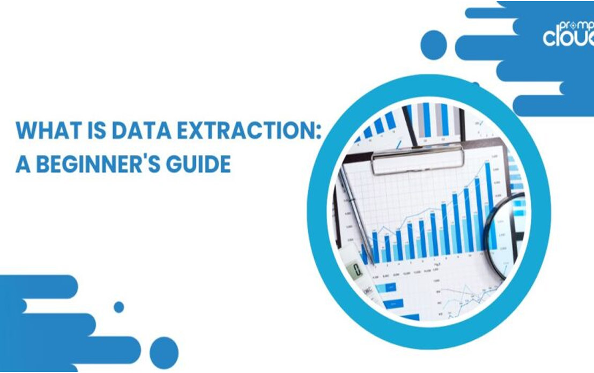

Data Analysis
Data AnalysisData analysis is the
process of inspecting,cleaning, transforming,
and modeling datato discover useful information,
draw conclusions, and support decision-making.
It involves a variety of techniques and
methodsto extract insights from data,
uncoverpatterns,and make informed decisions.

Data Extractions
Data AnalysisData analysis is the
Data extraction refers to the process of
retrieving datafrom various sources for
further analysis, storage, ortransformation.
This is a fundamental step in datamanagement
and is often necessary to gatherinformation
from diverse platforms and systems.

Data validation
Data validation is the process of
ensuring that data is accurate,
consistent, and conforms to predefined
standards or rules. It is a critical step in the data
management and quality assurance process.
inaccuracies in data, ensuring that it is reliable
and suitable for its intended purpose.
Data Mapping
Data mapping is a process that involves
creating a connection between two
distinct data models, schemas, or formats,
enabling the transfer or transformation
of data from one system to another.
a crucial step in data integration,
migration, and transformation projects.